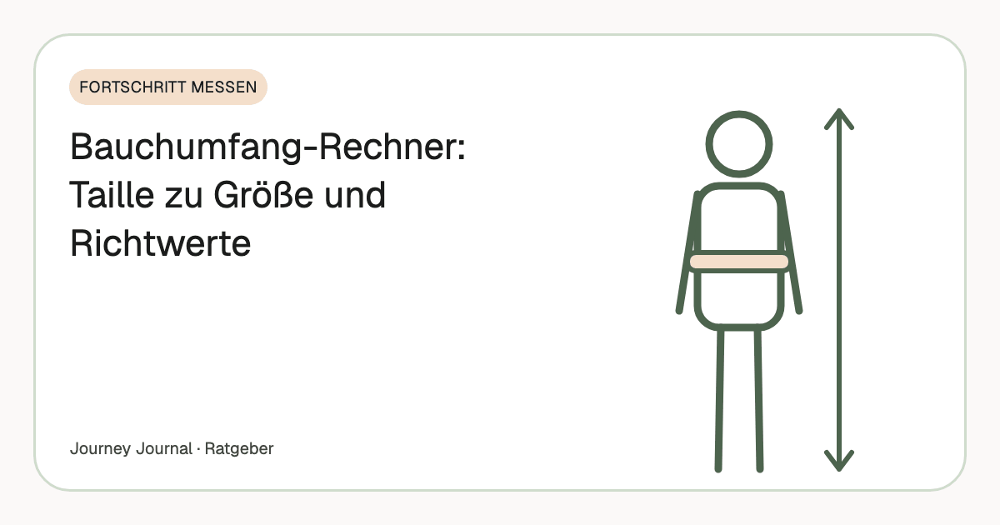

Ratgeber · Fortschritt messen · 8 Min. Lesezeit
Bauchumfang-Rechner: Taille zu Größe (WHtR) und Richtwerte für Frauen und Männer
Ein Maßband und deine Körpergröße reichen für eine der aussagekräftigsten Zahlen rund um Bauchfett. Der Rechner oben teilt deinen Taillenumfang durch deine Größe und ordnet das Ergebnis nach der Leitlinie des britischen National Institute for Health and Care Excellence (NICE) ein. Darunter findest du die bekannten Richtwerte für den Bauchumfang von Frauen und Männern, die richtige Messstelle und die Fälle, in denen die Werte nicht passen. Alle Zahlen sind Orientierung und ersetzen keine ärztliche Untersuchung.

Teil unseres Guides: Fortschritt beim Abnehmen messen: Waage, Maßband, Fotos oder Video?
Kurz gesagt
- Teile deinen Taillenumfang durch deine Körpergröße, beide in Zentimetern. NICE rät, die Taille unter der Hälfte der Körpergröße zu halten, also bei einem Verhältnis unter 0,5.
- NICE ordnet so ein: 0,4 bis 0,49 ohne erhöhtes Risiko, 0,5 bis 0,59 erhöhtes Risiko, ab 0,6 weiter erhöhtes Risiko. Das gilt für Erwachsene mit einem BMI unter 35, für beide Geschlechter und jede Herkunft.
- Für den Bauchumfang allein nennt der WHO-Expertenbericht bei Frauen ab mehr als 80 cm ein erhöhtes und ab mehr als 88 cm ein deutlich erhöhtes Risiko. Bei Männern liegen die Schwellen bei 94 und 102 cm.
- Für deinen eigenen Verlauf zählt vor allem, dass du immer an derselben Stelle misst. Die Taille zeigt Veränderungen am Bauchfett direkter als die Waage, die jedes Gramm Wasser mitzählt.
Rechner: Taille zu Größe
Die Rechnung läuft nur in deinem Browser, es wird nichts gespeichert oder gesendet. Die Stufen gelten nicht in der Schwangerschaft und laut NHS nicht bei einem BMI über 35. Sie ersetzen keine ärztliche Einschätzung.
Verhältnis Taille zu Größe berechnen
Die Rechnung ist einfach. Du teilst deinen Taillenumfang durch deine Körpergröße, beide in derselben Einheit. Das Beispiel aus der NICE-Leitlinie lautet 96,5 cm Taille bei 170 cm Größe, das ergibt 0,57. Auf Englisch heißt die Zahl Waist-to-Height Ratio, kurz WHtR. Der Rechner oben macht genau diese Rechnung und zeigt dir dazu die passende Stufe.
Als Faustregel formuliert NICE, die Taille solle weniger als die Hälfte der Körpergröße messen. Bei 170 cm Größe liegt die Grenze also bei 85 cm, bei 180 cm bei 90 cm. Weil die Größe in der Rechnung steckt, wächst die Grenze mit dem Körper mit.
0,4 bis 0,49: gesunder Bereich
NICE nennt diese Spanne gesundes Bauchfett ohne erhöhtes Gesundheitsrisiko. Für Werte unter 0,4 legt die Leitlinie keine eigene Stufe fest. Liegt dein Ergebnis darunter oder nimmst du ungewollt ab, sprich mit deiner Hausärztin oder deinem Hausarzt.
0,5 bis 0,59: erhöhter Bereich
Ab 0,5 spricht NICE von erhöhtem Bauchfett und erhöhtem Gesundheitsrisiko. Gemeint sind vor allem Typ-2-Diabetes, Bluthochdruck und Herz-Kreislauf-Erkrankungen. Das heißt nicht, dass du eine dieser Krankheiten hast. Es heißt, dass sich ein ärztlicher Blick auf Blutdruck und Stoffwechselwerte lohnt.
Ab 0,6: hoher Bereich
Ab 0,6 stuft NICE das Bauchfett als hoch ein, mit weiter erhöhtem Risiko für dieselben Erkrankungen. Eine ärztliche Abklärung ist hier sinnvoll, auch wenn du dich gesund fühlst. Jeder Zentimeter zählt. Bei 175 cm Größe senken 17,5 cm weniger Taille dein Verhältnis um eine ganze Stufe von 0,1.
Bauchumfang-Tabelle: Richtwerte für Frauen und Männer
Bevor sich das Verhältnis zur Größe verbreitete, war der Bauchumfang allein der übliche Maßstab. Die weltweit am häufigsten verwendeten Grenzwerte gibt der WHO-Expertenbericht von 2008 wieder. Sie stammen aus einer niederländischen Stichprobe von Erwachsenen zwischen 20 und 59 Jahren und passen deshalb vor allem zu Menschen europäischer Herkunft. Die WHO selbst bezeichnet sie als Beispiel und nicht als verbindliche eigene Empfehlung. Statt einer Tabelle stehen die Werte hier nach Gruppe.
Bauchumfang bei Frauen
Bei Frauen gilt ein Bauchumfang von mehr als 80 cm als Schwelle zu einem erhöhten Risiko für Stoffwechsel-Komplikationen. Ab mehr als 88 cm spricht der Bericht von einem deutlich erhöhten Risiko. Ein Umfang bis 80 cm liegt unterhalb dieser Schwellen.
Bauchumfang bei Männern
Bei Männern liegen die Schwellen höher. Mehr als 94 cm bedeutet ein erhöhtes, mehr als 102 cm ein deutlich erhöhtes Risiko. Die Werte 102 cm für Männer und 88 cm für Frauen nutzt auch das US-amerikanische National Cholesterol Education Program als alleinige Grenze.
Andere Herkunft, andere Schwellen
Die International Diabetes Federation (IDF) setzt die Grenze für Männer südasiatischer, chinesischer und japanischer Herkunft schon bei mehr als 90 cm an, für Frauen dieser Gruppen bei mehr als 80 cm. Auch NICE beschreibt für Menschen mit südasiatischem, chinesischem, anderem asiatischem, nahöstlichem, schwarzafrikanischem oder afrokaribischem Hintergrund eine stärkere Neigung zu Bauchfett. Das Verhältnis Taille zu Größe kommt laut NICE dagegen mit denselben Stufen für alle aus.
Warum das Verhältnis zur Größe oft mehr aussagt
Ein Bauchumfang von 90 cm bedeutet bei einer Frau mit 160 cm Größe etwas anderes als bei einer mit 185 cm. Die eine kommt auf ein Verhältnis von 0,56, die andere auf 0,49. Ein fester Grenzwert behandelt beide gleich. Im Jahr 2008 sah die WHO für das Verhältnis Taille zu Größe allerdings noch zu wenige Daten, um es zu bevorzugen.
Seitdem hat sich die Datenlage verändert. Margaret Ashwell und ihr Team werteten 2012 in einer Meta-Analyse 31 Studien mit zusammen mehr als 300.000 Erwachsenen aus mehreren ethnischen Gruppen aus. Das Verhältnis Taille zu Größe unterschied Menschen mit Diabetes, Bluthochdruck oder Herz-Kreislauf-Erkrankungen bei Frauen und Männern signifikant besser von Menschen ohne diese Befunde als der Bauchumfang. Gegenüber dem BMI verbesserte es die Unterscheidung um 4 bis 5 Prozent, der Bauchumfang um 3 Prozent.
NICE empfiehlt seit 2022, bei Erwachsenen mit einem BMI unter 35 das Verhältnis Taille zu Größe zusätzlich zum BMI zu bestimmen. Der BMI zeigt nicht, wo das Fett sitzt. Die Leitlinie weist ausdrücklich darauf hin, dass auch Menschen im BMI-Normalbereich viel Bauchfett haben können.
Bauchumfang messen: Taillenmitte oder Nabel?
Die WHO misst den Bauchumfang in der Mitte zwischen dem unteren Rand der untersten tastbaren Rippe und der Oberkante des Beckenkamms, am Ende einer normalen Ausatmung. NICE beschreibt dieselbe Stelle für die Selbstmessung und ergänzt, dass sie meist knapp über dem Bauchnabel liegt. Wenn du dein Ergebnis mit den Richtwerten vergleichen willst, nimm diese Stelle.
Viele messen der Einfachheit halber direkt auf Nabelhöhe. Der WHO-Bericht weist darauf hin, dass Messungen am Nabel den tatsächlichen Taillenumfang unterschätzen können. Eine Übersichtsarbeit von Robert Ross und Kollegen über 120 Studien fand allerdings, dass die Messstelle den Zusammenhang zwischen Bauchumfang und Krankheitsrisiko kaum verändert. Für den Vergleich mit Grenzwerten bleibt die Taillenmitte trotzdem die sauberere Wahl.
Für deinen Verlauf zählt etwas anderes, nämlich dieselbe Stelle bei jeder Messung. Wer heute am Nabel und in vier Wochen an der Taillenmitte misst, vergleicht zwei verschiedene Maße. Wie du Rippe und Beckenkamm ertastest, wie straff das Band sitzen soll und warum du zweimal misst, steht im Artikel Körperumfang messen: So legst du das Maßband richtig an.
Wann die Richtwerte nicht passen
Der Rechner des britischen Gesundheitsdienstes NHS nennt klare Ausschlüsse. Er ist nicht gedacht für Kinder unter fünf Jahren, in der Schwangerschaft, bei einer Essstörung oder dem Verdacht darauf, bei Wachstumsstörungen oder anderen Erkrankungen, die die Körpergröße beeinflussen, und bei Erwachsenen mit einem BMI über 35. Diese Grenzen gelten sinngemäß auch für den Rechner oben.
Für Kinder und Jugendliche ab fünf Jahren verwendet NICE dieselben drei Stufen des Verhältnisses Taille zu Größe. Die festen Bauchumfang-Werte für Frauen und Männer stammen dagegen aus Daten von Erwachsenen. Bei Kindern gehört die Einordnung in die kinderärztliche Praxis.
Ab einem BMI von 35 liegen die meisten Menschen ohnehin über allen Schwellen. Der WHO-Bericht zitiert dazu den Leitfaden der US-amerikanischen National Institutes of Health, nach dem Grenzwerte für den Bauchumfang nur bis zu einem BMI von 35 nützlich sind. Wer mit hohem Gewicht startet, bekommt vom Rechner also vor allem eine Bestätigung dessen, was er schon weiß. Aussagekräftig wird dann der eigene Verlauf, denn jeder Zentimeter weniger ist messbar, auch wenn die Stufe noch dieselbe bleibt.
Viel Muskelmasse verzerrt den BMI. Für das Verhältnis Taille zu Größe gilt das laut NICE nicht, die Stufen sind ausdrücklich auch für Erwachsene mit hoher Muskelmasse gedacht.
Warum die Taille beim Abnehmen mehr zeigt als die Waage
Die Waage zählt alles mit, was du wiegst: Fett, Muskeln, Wasser und Mageninhalt. Deshalb springt sie von Tag zu Tag, auch wenn sich am Körperfett nichts getan hat. Woher diese Sprünge kommen, erklärt der Artikel über tägliche Gewichtsschwankungen.
Das Maßband misst dort, wo das Bauchfett sitzt. Laut WHO-Bericht ist ein größerer Bauchumfang in verschiedenen Bevölkerungen mit einem höheren Krankheitsrisiko verbunden. Sinkt dein Bauchumfang, sinkt also genau die Zahl, die mit diesem Risiko zusammenhängt. Bei einem Plateau auf der Waage kann das Maßband trotzdem Bewegung zeigen, etwa wenn du gleichzeitig Muskeln aufbaust.
Miss alle zwei bis vier Wochen morgens, notiere Wert und Datum und rechne das Verhältnis neu aus. Wie Maßband, Waage, Fotos und Video zusammenspielen, zeigt der Vergleich der vier Messmethoden.
Was du bei einem erhöhten Wert tun kannst
NICE empfiehlt Erwachsenen, deren Verhältnis Taille zu Größe ein erhöhtes Risiko anzeigt, sich ärztlich beraten und ihre Herz-Kreislauf- und Stoffwechselwerte prüfen zu lassen.
Ein Wert über 0,5 ist eine Information und kein Urteil. Er sagt nichts darüber aus, wie diszipliniert du bist. Er zeigt dir, wo du heute stehst, und genau dafür ist er nützlich: als Startpunkt, an dem du später jeden Zentimeter ablesen kannst.
Häufige Fragen
Welcher Bauchumfang ist bei Frauen normal?
Nach den im WHO-Expertenbericht genannten Werten steigt das Risiko für Stoffwechsel-Komplikationen bei Frauen ab mehr als 80 cm, ab mehr als 88 cm gilt es als deutlich erhöht. Die Werte stammen aus Daten von Menschen europäischer Herkunft. Genauer ist das Verhältnis zur Körpergröße, das unter 0,5 liegen sollte.
Welcher Bauchumfang ist bei Männern normal?
Bei Männern europäischer Herkunft gilt ein Bauchumfang von mehr als 94 cm als erhöht und von mehr als 102 cm als deutlich erhöht. Die International Diabetes Federation setzt die Grenze für Männer südasiatischer, chinesischer und japanischer Herkunft bei mehr als 90 cm an.
Wie berechne ich das Verhältnis Taille zu Größe?
Teile deinen Taillenumfang durch deine Körpergröße, beide in Zentimetern. Bei 96,5 cm Taille und 170 cm Größe ergibt das 0,57. Nach NICE bedeuten 0,4 bis 0,49 kein erhöhtes Risiko, 0,5 bis 0,59 ein erhöhtes und ab 0,6 ein weiter erhöhtes Risiko.
Wo misst man den Bauchumfang, an der Taille oder am Nabel?
Für den Vergleich mit Richtwerten in der Mitte zwischen unterster Rippe und Beckenkamm, am Ende einer normalen Ausatmung. Diese Stelle liegt meist knapp über dem Nabel. Für den eigenen Verlauf ist entscheidend, dass du jedes Mal an derselben Stelle misst.
Ist das Verhältnis Taille zu Größe besser als der BMI?
Eine Meta-Analyse von Ashwell und Kollegen mit mehr als 300.000 Erwachsenen fand, dass es Risikofaktoren wie Diabetes und Bluthochdruck besser erkennt als BMI und Bauchumfang. NICE empfiehlt es seit 2022 bei Erwachsenen mit einem BMI unter 35 zusätzlich zum BMI.
Gilt der Rechner auch für Kinder und in der Schwangerschaft?
In der Schwangerschaft nicht, und auch nicht bei Kindern unter fünf Jahren, bei Essstörungen, bei Erkrankungen, die die Körpergröße beeinflussen, oder bei Erwachsenen mit einem BMI über 35. Für Kinder ab fünf Jahren nutzt NICE dieselben Stufen, die Einordnung gehört aber in die kinderärztliche Praxis.
Quellen
- WHO (2011): Waist circumference and waist-hip ratio. Report of a WHO Expert Consultation, Geneva, 8-11 December 2008 – Messstelle Rippe/Beckenkamm, Schwellen über 80/88 cm (Frauen) und über 94/102 cm (Männer), IDF-Werte nach Herkunft, Hinweis zur Nabelhöhe
- NICE (2025): Overweight and obesity management (NG246), Abschnitt Identifying and assessing overweight, obesity and central adiposity – Verhältnis Taille zu Größe: Stufen 0,4 bis 0,49, 0,5 bis 0,59 und ab 0,6, Taille unter halber Körpergröße, Messanleitung, Kinder ab 5 Jahren (Empfehlungen von 2022)
- Ashwell M., Gunn P., Gibson S. (2012): Waist-to-height ratio is a better screening tool than waist circumference and BMI for adult cardiometabolic risk factors: systematic review and meta-analysis. Obesity Reviews 13(3) – 31 Studien, mehr als 300.000 Erwachsene, Verhältnis Taille zu Größe besser als Bauchumfang und BMI
- Ross R. et al. (2008): Does the relationship between waist circumference, morbidity and mortality depend on measurement protocol for waist circumference? Obesity Reviews 9(4) – Übersicht über 120 Studien: Messstelle verändert den Zusammenhang mit dem Krankheitsrisiko kaum
- NHS: Calculate your waist to height ratio – Ausschlüsse: unter 5 Jahren, Schwangerschaft, Essstörung, Wachstumsstörung, BMI über 35 bei Erwachsenen
Dieser Artikel ersetzt keine ärztliche Beratung. Bei einer größeren Gewichtsreduktion ist eine medizinische Begleitung sinnvoll.